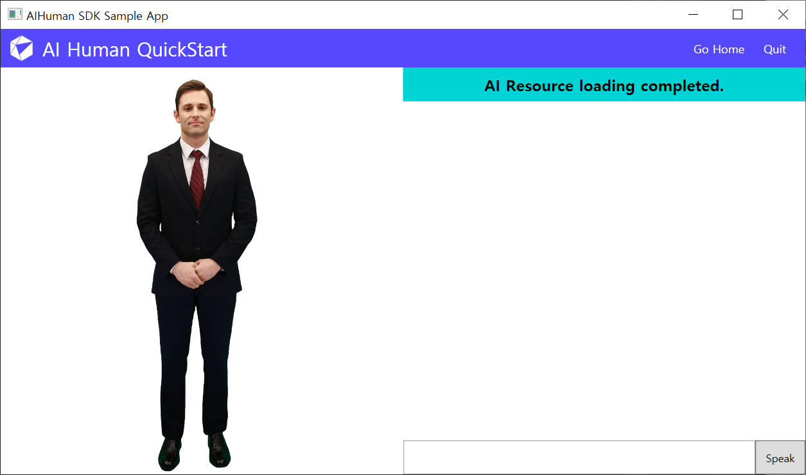
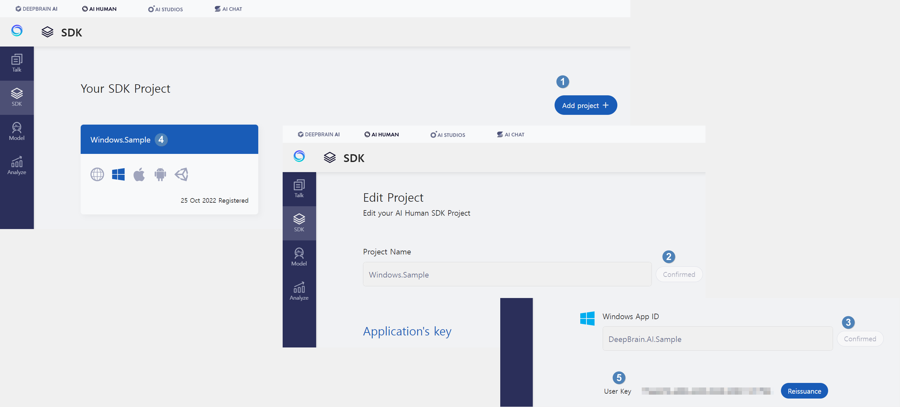

AIHuman Quick Start

In this chapter, we will quickly set up AIPlayer with the default AI and learn about AI speaking process. When setting up AIPlayer for the first time, it may take several minutes to load depending on the network condition.
1. The SDK authentication process is performed in the partial class App : System.Windows.Application.
Create a project in SDK Website, enter App Id of Windows and click confirm. Then User Key will be issued.

Implement the AuthStart function: input appId, userKey, uuid, and platform information.
- appId is a unique Id of the project, and is generally created like "com.example.project.appname".
- userkey can be obtained by creating a project on the AIHuman website and registering the appId.
- uuid refers to the unique ID of the device where the application is installed. It is created by calling Guid.NewGuid(), and saved and reused after initial creation so that it does not change each time it is called.
- platform argument uses "wnds", which means windows.
2. Create AIPlayer through CreateQuickStartViewModel using INavigationService.
1. Create a QuickStartView and a QuickStartViewModel that will contain AIPlayer.
2. Create a Layout Component (parent layout) to which AIPlayer will be added at the location where you want to show AIPlayer of QuickStartView.
3. Binding AIPlayer Object of QuickStartViewModel to QuickStartView.
3. In QuickStartViewModel, it is possible to receive callback of AIState by IAIPlayerCallback.
Implement the command for speaking and default AI operation.
private void Speak_Command(object args)
{
if (CanSpeak && string.IsNullOrEmpty(InputText) == false)
{
_aiPlayer.Send(new[] { InputText });
SpeechList.Add($"{_aiPlayerContext.AIName}: {InputText}");
InputText = string.Empty;
CanSpeak = false;
}
}
There are many omitted parts in the above explanation. Please refer to App.xaml, QuickStartView.xaml, and QuickStartViewModel.cs files by opening the Solution file of the given Sample.